行銷素材設計
轉化率、品牌一致性、跨平台適應
轉專注於創造高點擊、強品牌感的視覺素材，涵蓋社群媒體、廣告與電商通路，旨在提升品牌聲量並達成商業轉化。
網頁相關插圖繪製
使用者體驗、風格一致性、功能性美學
為網頁介面量身打造功能性插圖與視覺元件，透過風格化設計提升網頁質感，並引導使用者流暢地與產品互動。

行銷素材設計
Products｜STTM, No School Life, LUCY
Team｜諾比科技公司 (2021)
Tools｜Photoshop, Illustrator, Figma
獨立執行品牌跨平台行銷素材之產出，涵蓋社群媒體、廣告 Banner 及影音縮圖。除具備全方位的視覺執行力（構圖、修圖、繪圖），亦主動參與文案討論優化，致力於在維持品牌一致性的基礎上，打造高點擊率的視覺方案。
Key Focus
- Multi-Platform Optimization | 針對 FB, IG, Google Ads 等不同規格優化。
- Visual Storytelling | 透過視覺引導用戶心理，提升點擊率。
- Brand Consistency | 確保素材在不同通路皆符合品牌規範。
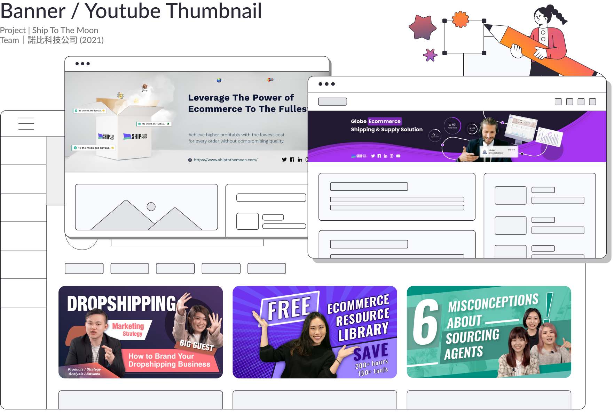
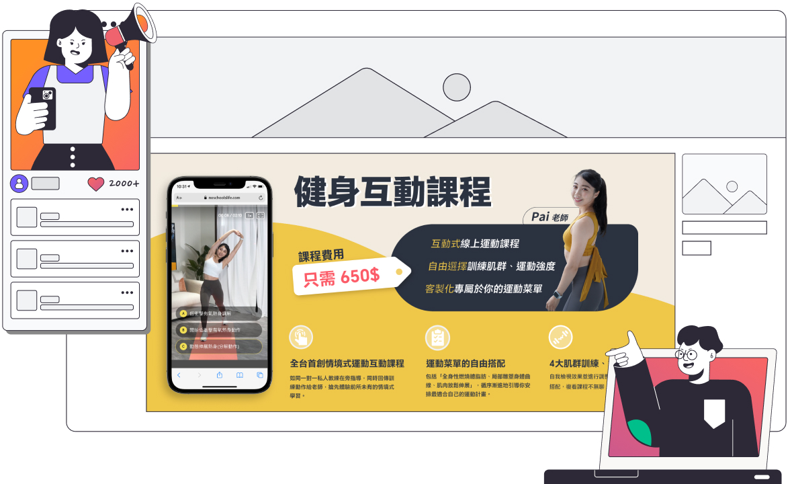
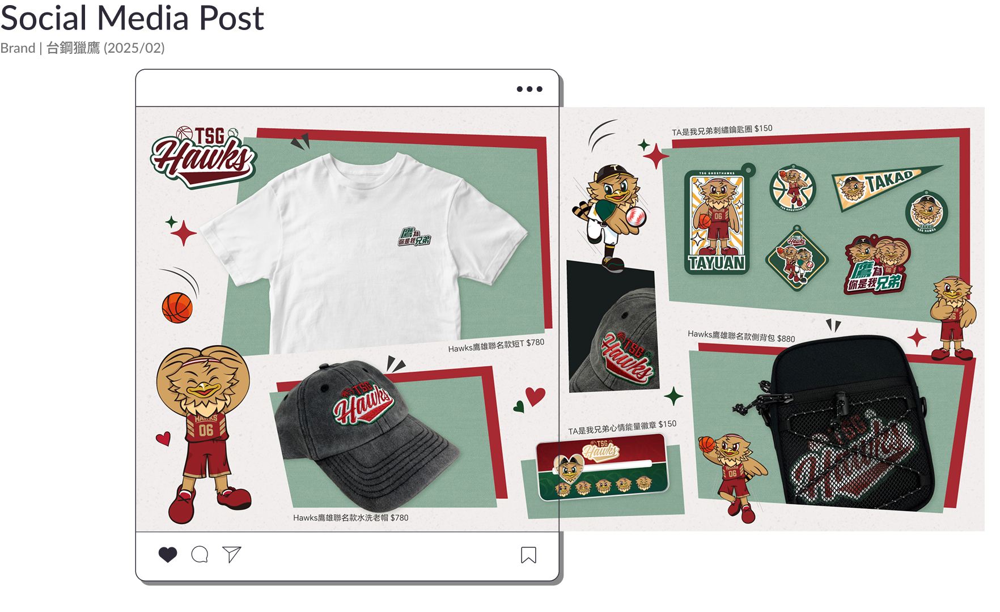
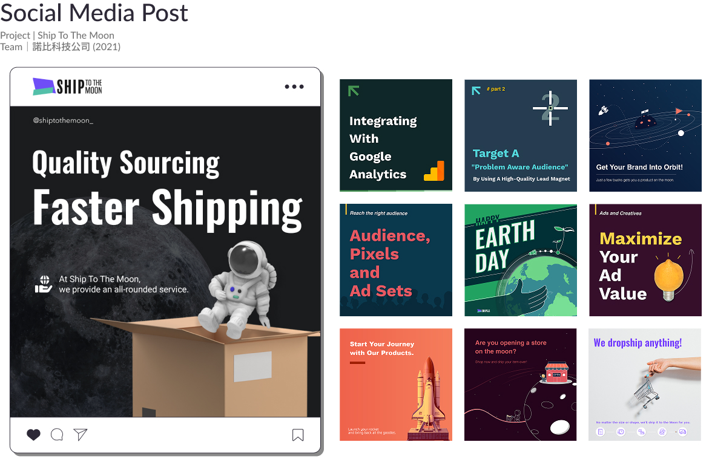
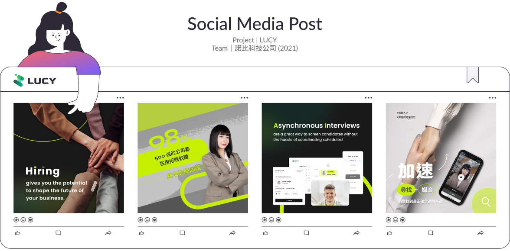
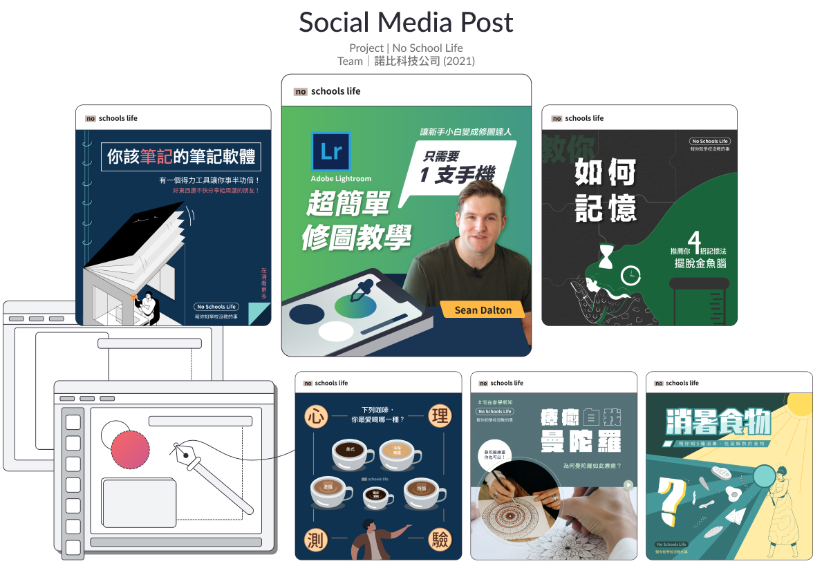
Illustration For Website

網頁相關插圖繪製
Products｜面試趣、比薪水、小任務、工作吧
Team｜米克斯數據有限公司
Tools｜Figma
負責旗下四大職涯平台的插圖系統建構與視覺產出。我致力於透過具親和力的設計語彙溫暖數位資訊，在多產品線並行的架構下，確保整體介面質感與品牌識別的一致性。
Key Focus
- Information Visualization | 將複雜的職涯資訊圖形化，降低使用者閱讀門檻。
- Cross-Product Consistency | 在不同品牌調性間，維持插圖線條與配色系統的一致性。
- User Engagement | 運用風格化視覺引導使用者操作流向，強化介面的互動敘事感。
小任務 Task.tw
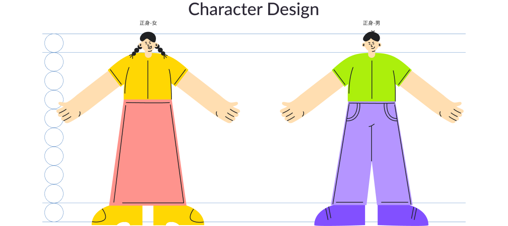
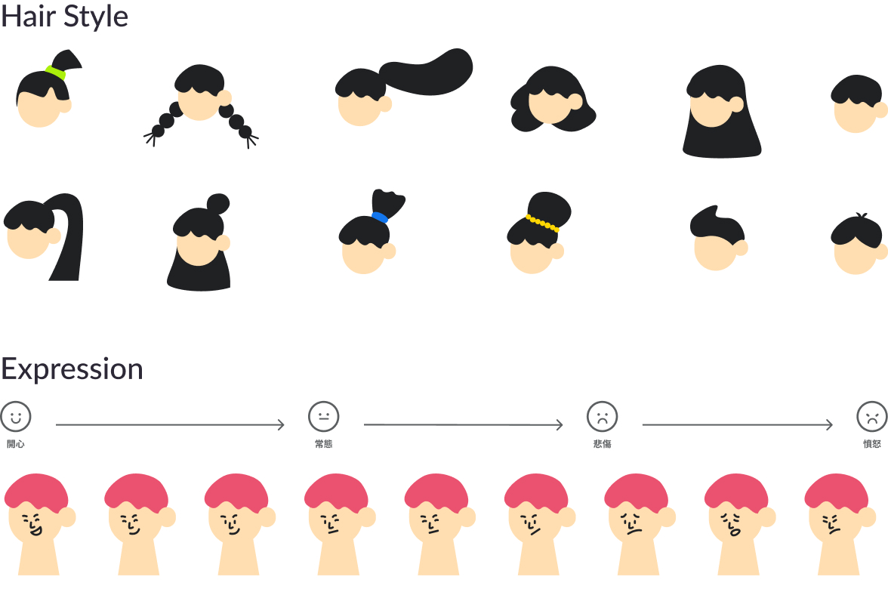
Color Plan
- 核心色基調：以品牌色 #8250FF 紫色奠定插畫整體的基調。
- 同類色層次：採用同類色調的藍色作為輔助色，少量應用於特定的背景層次與次要細節。此配色確保了畫面整體視覺的和諧連貫，並增添了層次感。
- 互補色點綴：為了激發視覺活力與畫面趣味，特別挑選黃、粉、綠三種互補色。將其精準應用於插畫中的關鍵細節或裝飾元素，有效打破單調，為畫面賦予豐富的動感。

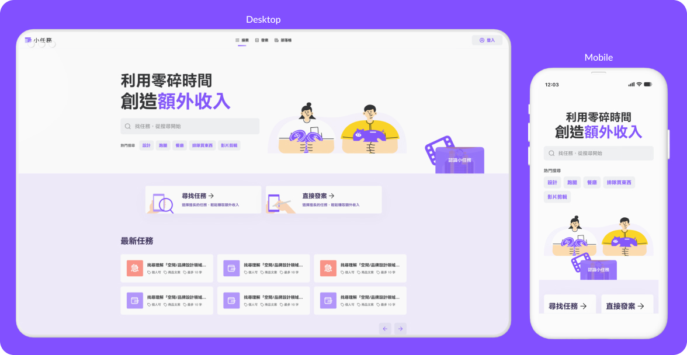
面試趣 Interview.tw
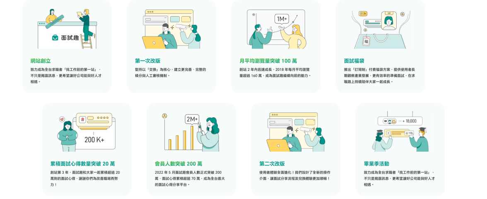
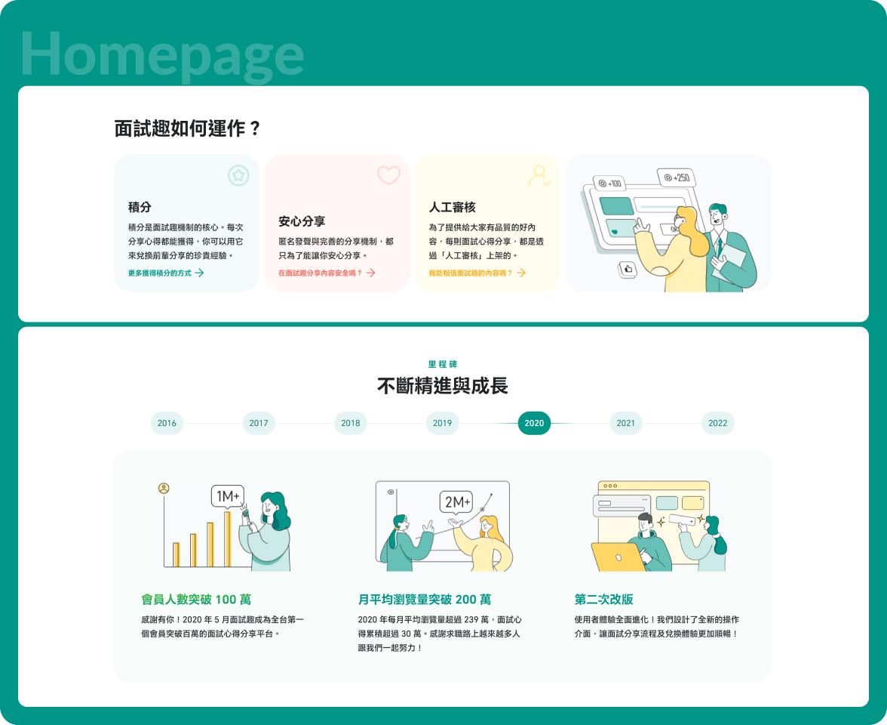